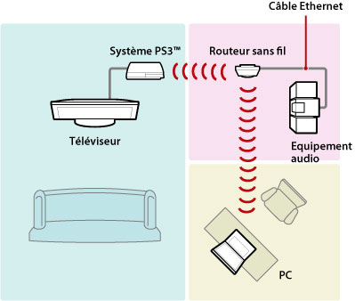
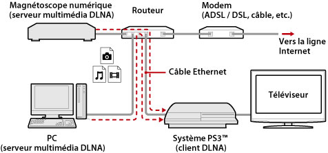
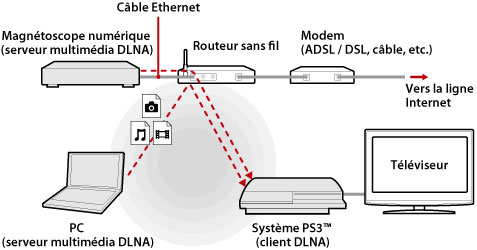
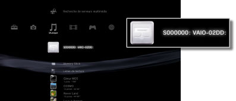
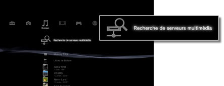

Paramètres > Paramètres réseau > Connexion au serveur multimédia
Connexion à serveur multimédia
Pour modifier les paramètres de la connexion à des périphériques prenant en charge DLNA
| Activer | Pour activer la connexion à des périphériques prenant en charge DLNA. |
|---|---|
| Désactiver | Pour désactiver la connexion à des périphériques prenant en charge DLNA. |
A propos de DLNA
DLNA (Digital Living Network Alliance) est une norme permettant à des périphériques numériques (tels que des ordinateurs personnels, des caméscopes numériques et des téléviseurs) de se connecter au réseau et de partager les données contenues dans d'autres périphériques compatibles DLNA connectés.
Les périphériques compatibles DLNA ont deux différentes fonctions. Les "serveurs" distribuent des médias, tels que des fichiers image, musicaux ou vidéo, alors que les "clients" reçoivent et lisent les médias. Certains périphériques jouent ces deux rôles. En utilisant un système PS3™ comme client, vous pouvez afficher des images ou lire des fichiers de musique ou vidéo enregistrés sur un périphérique disposant de la fonctionnalité de serveur multimédia DLNA sur un réseau.

Connexion du système PS3™ à un serveur multimédia DLNA
Raccordez le système PS3™ à un serveur multimédia DLNA à l'aide d'une connexion filaire ou sans fil.
Exemple de raccordement à un ordinateur personnel à l'aide d'une connexion filaire

Exemple de raccordement à un ordinateur personnel à l'aide d'une connexion sans fil

Configuration d'un serveur multimédia DLNA
Configurez le serveur DLNA afin que le système PS3™ puisse l'utiliser. Les périphériques suivants peuvent être utilisés comme serveurs multimédia DLNA.
- Périphériques prenant en charge la norme DLNA, même s'il s'agit de produits de sociétés autres que Sony
- Ordinateurs personnels sur lesquels Windows Media® Player 11 est installé
Si vous utilisez un périphérique AV comme serveur multimédia DLNA
Activez la fonction de serveur multimédia DLNA du périphérique raccordé pour vous assurer que son contenu est disponible pour un accès partagé. La méthode de configuration dépend du périphérique connecté. Pour plus de détails, reportez-vous aux instructions qui accompagnent le périphérique.
Si vous utilisez un ordinateur personnel Microsoft® Windows® comme serveur multimédia DLNA
Un ordinateur personnel Microsoft® Windows® peut jouer le rôle de serveur multimédia DLNA en utilisant les fonctions de Windows Media® Player 11.
1. |
Démarrez Windows Media® Player 11. |
|---|---|
2. |
Sélectionnez [Partage des fichiers multimédias] dans le menu [Bibliothèque]. |
3. |
Activez la case à cocher [Partager mon média]. |
4. |
Dans la liste des périphériques affichée sous la case à cocher [Partager mon média], sélectionnez les périphériques avec lesquels vous souhaitez partager des données, puis sélectionnez [Autoriser]. |
5. |
Sélectionnez [OK]. |
Conseils
- Windows Media® Player 11 n'est pas installé par défaut sur les ordinateurs personnels Microsoft® Windows®. Téléchargez le programme d'installation à partir du site Web Microsoft® afin d'installer Windows Media® Player 11.
- Pour plus de détails sur l'utilisation de Windows Media® Player 11, consultez la fonctionnalité d'aide de celui-ci.
- Il peut arriver que le logiciel original du serveur multimédia DLNA soit installé sur l'ordinateur personnel. Pour plus de détails, reportez-vous aux instructions qui accompagnent l'ordinateur.
Lecture d'un contenu de serveur multimédia DLNA
Lorsque vous activez le système PS3™, les serveurs multimédia DLNA situés sur le même réseau sont automatiquement détectés et les icônes des serveurs détectés s'affichent sous  (Photo),
(Photo),  (Musique) et
(Musique) et  (Vidéo).
(Vidéo).
1. |
Sélectionnez l'icône du serveur multimédia DLNA auquel se connecter sous  |
|---|---|
2. |
Sélectionnez le fichier à lire. |
Conseils
- Le système PS3™ doit être connecté à un réseau. Pour plus de détails sur les paramètres réseau, consultez
 (Paramètres) >
(Paramètres) >  (Paramètres réseau) > [Paramètres connexion Internet] dans le présent mode d'emploi.
(Paramètres réseau) > [Paramètres connexion Internet] dans le présent mode d'emploi. - Si la méthode d'allocation des adresses IP AutoIP a été remplacée par DHCP dans les paramètres de l'environnement réseau, lancez à nouveau une recherche des serveurs sous
 (Recherche de serveurs multimédia).
(Recherche de serveurs multimédia). - L'icône de serveur multimédia DLNA ne s'affiche que si [Connexion à serveur multimédia] est activé sous (Paramètres) > (Paramètres réseau).
- Les noms de dossier affichés varient selon le serveur multimédia DLNA.
- Selon le serveur multimédia DLNA, il se peut que certains fichiers soient illisibles ou que certaines opérations réalisables pendant la lecture soient limitées.
- Vous ne pouvez pas lire de contenu protégé par les droits d'auteur.
- Il se peut qu'un astérisque apparaisse en regard des noms de fichier de données stockées sur des serveurs qui ne sont pas compatibles avec DLNA. Dans certains cas, le système PS3™ ne peut pas lire ces fichiers. Par ailleurs, même s'ils peuvent être lus sur le système PS3™, il peut être impossible de lire ces fichiers sur d'autres périphériques.
Recherche manuelle de serveurs multimédia DLNA
Vous pouvez lancer une recherche des serveurs multimédia DLNA situés sur le même réseau. Utilisez cette fonctionnalité si aucun serveur multimédia DLNA n'est détecté alors que le système PS3™ est sous tension.
Sélectionnez (Recherche de serveurs multimédia) sous (Photo), (Musique) ou (Vidéo). Lorsque les résultats de la recherche sont affichés et que vous revenez au menu XMB™, la liste des serveurs multimédias DLNA pouvant être connectés apparaît.

Conseil
(Recherche de serveurs multimédia ) ne s'affiche que si [Connexion à serveur multimédia] est activé dans (Paramètres réseau) sous (Paramètres).